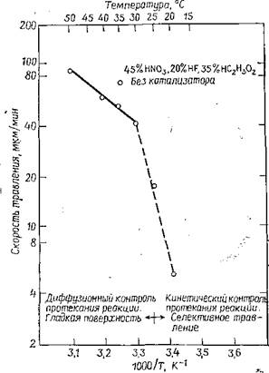

электронный
ресурс по учебной дисциплине 1-58 01 01 - "ИНЖЕНЕРНО-ПСИХОЛОГИЧЕСКОЕ ОБЕСПЕЧЕНИЕ ИНФОРМАЦИОННЫХ ТЕХНОЛОГИЙ"
|
||
| Оглавление | Программа | Теория | Практика | Контроль знаний | Об авторах | ||
|
Практика
ЛАБОРАТОРНАЯ РАБОТА №2 Исследование процессов изготовления подложек Цель работы: Изучить процесс удаления с подложек приповерхностных дефектов, вызванных абразивной обработкой. Написать программу и построить зависимости выходных параметров от входных. Теоретические сведения После операций механической обработки приповерхностный слой пластин остается поврежденным и загрязненным на глубину, зависящую от применяемого оборудования и размера абразивных частиц. Обычно после двустороннего шлифования глубина поврежденного абразивной обработкой слоя составляет 10 мкм и может быть удалена химическим травлением. Традиционно травление проводят в смеси плавиковой, азотной и уксусной кислот, хотя в последнее время для этой цели все чаще используют растворы щелочей — гидроокиси калия или натрия. Технологическая линейка для травления подложек состоит из резервуара с травящим раствором и одного или нескольких бачков для промывки подложек. Травление — групповой процесс обработки, когда одновременно обрабатывается несколько десятков подложек. В лучших образцах оборудования для достижения однородности травления предусмотрено устройство для вращения подложек во время травления. Для того чтобы заведомо удалить все повреждения, вызванные абразивной обработкой, подложки обычно перетравливают. Глубина травление стороны подложки составляет ~20 мкм. Чаще всего контроль, процесса травления осуществляется путем измерения толщин пластин до и после травления. Время обработки пластин в каждом бачке составляет несколько минут. Реакция травления кремния имеет электрохимическую природу. Травление представляет собой окислительно-восстановительный процесс с последующим растворением продуктов окислительной реакции. В травящей системе, состоящей из смеси плавиковой, азотной и уксусной кислот, азотная кислота представляет собой окислитель, а плавиковая растворяет продукты окисления. Реакция травления выглядит следующим образом: 3Si + 4NO3 +18HF®3H2SiF6 Уксусная кислота в травящей смеси служит в качестве растворителя и обеспечивает большую однородность и более легкий контроль процесса травления. Для этой цели можно применять и воду, однако использование уксусной кислоты более предпочтительно, поскольку вода является продуктом реакции травления. Процесс травления может быть изотропным или анизотропным в зависимости от состава травящей смеси и температуры. В растворах с большим содержанием плавиковой кислоты контролирующей стадией процесса растворения является реакция окисления. В этом случае травление протекает анизотропно, так как реакция окисления очень чувствительна к уровню легирования, ориентации и дефектам кристаллической структуры, в местах выхода которых на поверхность окисление происходит селективно. В травящих смесях с большим содержанием азотной кислоты процесс травления является изотропным, а скорость реакции контролируется стадией растворения. Как было обнаружено, для растворов с большим содержанием азотной кислоты в диапазоне температур 30—50 °С кинетика растворения лимитируется диффузионным процессом (рис. 1), который заключается в переносе продуктов реакции* через граничный диффузионный слой к поверхности подложки. Диффузионный контроль предполагает, что скорость самой реакции значительно ниже скорости доставки реагентов и, следовательно, травление идет более однородно. По этой причине для удаления приповерхностных дефектов более предпочтительны именно растворы с большим содержанием азотной кислоты. Вращение пластин в процессе травления обеспечивает неизменную толщину граничного диффузионного слоя и, как следствие, хорошую воспроизводимость величины удаленного слоя с поверхности подложки. Изотропный характер травления приводит к образованию гладкой, полированной поверхности. Рекомендуемый состав травителя 4:1:3 с использованием 70%-ной азотной, 49%-ной плавиковой и ледяной уксусной кислот.  Рисунок 1 – Типичное графическое изображение зависимости скорости травления кремииевых подложек от температуры для одного из вариантов смеси HF, HNO3 и СН3СООН К сожалению, однородность геометрических параметров и высокую плоскопараллельность пластин, достигнутых на этапе шлифования, невозможно сохранить при травлении пластин большого диаметра (более 75 мм) на том уровне, который еще может быть исправлен на этапе полирования. Гидродинамика вращения пластин большого диаметра в травящих растворах не обеспечивает одинаковой толщины граничного слоя, что приводит к возникновению неплоскостности поверхностей подложки. Проекционная фотолитография налагает жесткие требования на плоскостность поверхности, что обусловило необходимость, использования щелочного травления. Щелочное травление по своей природе анизотропно, так как скорость травления очень сильно зависит от ориентации. Протекание реакции определяется числом оборванных связей на поверхности. Лимитирующей стадией реакции щелочного травления является кинетика самой реакции, поэтому нет необходимости вращать подложки в растворе. По этой же причине, так как перенос молекул реагентов через граничный слой уже не влияет на протекание реакции, можно получать превосходную однородность травления. Как и в случае кислотного травления, щелочное травление проводится в растворе, в состав которого входят КОН и Н2О или NaOH и Н2О. Наиболее часто используют 45%-ный раствор КОН в Н2О. Травление проводят при температуре 90°С. Достигаемая скорость травления при этих условиях для подложек с ориентацией {100} составляет 25 мкм/мин. Иногда при недостаточной глубине травления на поверхности подложки могут остаться повреждения, которые при последующей высокотемпературной обработке подложек могут привести к формированию дислокаций. Задание для выполнения лабораторной работы Рассчитайте, какой объём HF и HNO3 необходимо взять, чтобы удалить приповерхностные дефекты, вызванные абразивной обработкой, на X подложках диаметром D мм. Варианты заданий:
Порядок выполнения работы 1. Напишите программу, обеспечивающую решение задачи. 2. Постройте зависимости выходных параметров от входных. 3. Оформите отчет и защитите лабораторную работу. Содержание отчета 1. Цель работы. 2. Краткие теоретические сведения. 3. Решение задачи. 4. Код программы и скриншоты рабочих окон. 5. Зависимости выходных параметров от выходных. 6. Выводы по работе. Контрольные вопросы 1. Что такое травление? 2. Напишите окислительно-восстановительную реакцию, характеризующую процесс травления. 3. Какие виды травления Вам известны? 4. Какой рекомендуемый состав травителя? Что используют в качестве травителей. 5. Как происходит процесс травления? 6. Какое применяют оборудование для проведения операции травления. 7. Какова эффективность проведения процесса травления? Практика
|
| (С) БГУИР |